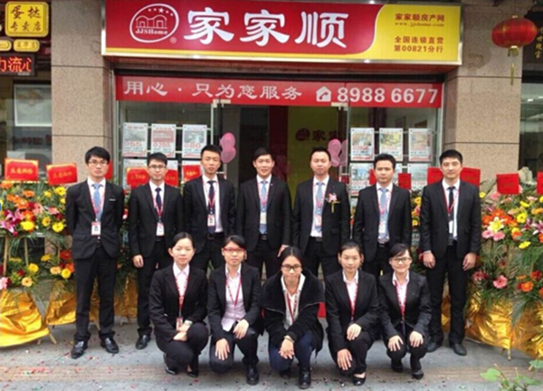
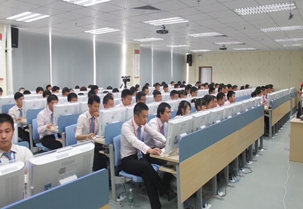

家家顺地产（深圳）
“阳光透明，顺心服务，用心，只为您顺心”家家顺控股集团成立于2008年5月，总部位于深圳，从原中介巨人创辉租售集团（2004年9月两家店起步，投资5亿多元，到2007年10月仅仅三年时间在全国27个城市拥有1850家连锁网点、2万多名从业人员）的肩膀上展翅腾飞。创业初期，家家顺从接手创辉租售60余家连锁网点、400多名精英的基础上起步，发展至今，已拥有连锁网点800余家、从业人员1万多人，在已进驻的绝大多数城市市场占有率均位居行业前列，并在行业低迷时依然稳健前行、傲然健康成长，短短几年时间即成为全国规模最大的房地产经纪企业之一，再创中国房地产经纪行业的奇迹。 家家顺控股集团以房地产流通为核心产业，致力于为客户提供放心 、省心、顺心的零距离服务和解决方案。通过锐意拼搏和不断进取，业务涵盖二手房买卖、房屋租赁、项目策划、新房代理、电子商务、资产管理、金融理财等领域，遍及深圳、广州、中山、江门、东莞、惠州、珠海、长沙等几十个城市，拥有“家家顺”、“盛联行”、“创辉租售”、“盛联按揭”、“顺联按揭担保”、“家家顺在线”、“万顺通资产管理”、“万顺通基金管理”等多家子公司及优秀品牌。 家家顺控股集团秉承“你顺，我顺，家家顺”的核心价值观，履行“专业解决中国房地产流通问题，让客户放心、省心、顺心”的使命，遵从扁平化、简单化、标准化、流程化、制度化、信息化的“六化”管理理念，坚持“用心，只为您顺心”的服务理念，力倡“业务一体化”新思维，创新“二三级联动销售”新模式，得到了员工和客户的高度认可、社会的高度评价，曾获“中国最具生命力百强企业”、“全国优秀房地产经纪机构”、“中国十大名牌中介机构”等多项殊荣。 家家顺控股集团视人才为最宝贵的财富，搭建了以员工发展为核心的培训体系，打造了全新线上线下一体化的“家家顺学院”；秉承“员工富公司富，员工强公司强”的薪酬理念，推行了经纪人即发高分成制、管理人员利润分红制、职能人员薪酬“三年翻一倍，五年翻两倍”等薪酬福利政策，设立了仁杰奖、创新奖、授课奖、现金奖、信息奖、荣誉奖等诸多奖项，实施了『三年腾飞』、『聚•赢』、『梦圆JJS』人才工程等一系列独特的聚贤育才措施，集中构建了行业最具竞争力的“零成本创业平台”，助从业人员实现自我价值，携手共创辉煌。 家家顺控股集团在“立足大深圳，密布珠三角，服务全中国”的战略规划下，将陆续进驻全国100多个大中城市，必将成为中国房地产流通领域规模最大、服务最好的公众公司！ 家家顺，中国房地产交易的标准！

